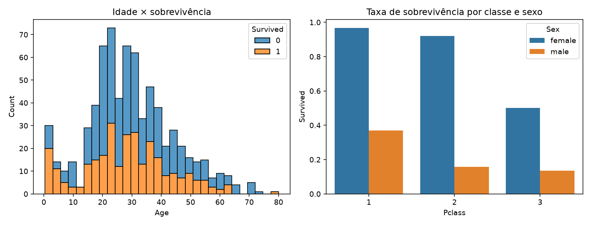

De onde vem o dado, o que há dentro dele — e o trabalho
que responde pelas duas notas do semestre
Saia daqui com um dataset escolhido e três perguntas rascunhadas. É a tarefa da semana.
Onde os datasets vivem · Kaggle por dentro · como avaliar · licença e LGPD — e só então baixar
Aula 1 sobrevoou as oito etapas. Da aula 2 até a 11, descemos uma por uma.
kaggle.com/datasetsÓrgãos com dado bom e pouco explorado: ANAC, ANTAQ, INEP, DATASUS, TSE, ANP, INMET, Banco Central.
Conta gratuita. Para baixar via API, precisa de conta verificada por telefone.
| Onde olhar | O que procurar |
|---|---|
| Data Card | origem, método de coleta, o que cada coluna significa |
| Aba Data | arquivos, tamanho, e a prévia por coluna — histograma e % de vazio |
| Usability | nota de 0 a 10 do metadado — não da qualidade do dado |
| License | o que você pode fazer com ele crítico |
| Provenance | fonte original · quase sempre há uma, e ela é melhor |
| Code | notebooks públicos: os achados e as armadilhas já mapeados |
| Discussion | onde alguém já reclamou do erro que você levaria 3h para achar |
A prévia por coluna, na aba Data, é a melhor ferramenta gratuita de triagem que existe.
Metadado. Nada além disso.
Existe dataset 10.0 inteiramente sintético.
| Licença | Significa | Serve? |
|---|---|---|
| CC0 · Public Domain | uso livre, sem condições | sim |
| CC BY / CC BY-SA | livre, citando a fonte | sim |
| CC BY-NC | proibido uso comercial | sim — trabalho acadêmico |
| ODbL | livre, derivados sob a mesma licença | sim |
| "Other" / não declarada | ninguém sabe | evite |
| Só para a competição | uso restrito ao Kaggle | não |
No projeto: se houver dado pessoal, agregue ou pseudonimize — e diga o que fez, na seção de limitações. Tratamos isso a fundo na aula 17.
Você pula direto para a etapa 5. E não aprende as 2–4.
encoding='latin-1', sep=';'"-", "N/D", "999" como vazioÉ onde mora 70% do trabalho — e da nota.
1 · Botão Download — para começar
titanic.zip → descompactar
→ pasta dados/ do projeto2 · kagglehub — reprodutível
import kagglehub, pandas as pd
p = kagglehub.dataset_download(
"yasserh/titanic-dataset")
df = pd.read_csv(f"{p}/Titanic-Dataset.csv")3 · CLI oficial — para automatizar
# pip install kaggle
# token em ~/.kaggle/kaggle.json
# kaggle datasets download \
# -d yasserh/titanic-dataset --unzipRegra do projeto: o notebook precisa rodar na máquina do professor. Versione o CSV, ou documente o download.
O nosso já está em dados/titanic.csv — abram o Jupyter.
Titanic · do arquivo bruto a cinco achados, sem nenhum modelo · abram o aula02.ipynb
Este bloco acontece dentro do Jupyter, ao vivo, na minha tela. Abram o mesmo notebook e rodem junto.
aula02.ipynbo roteiro executável — ferramental Python, anatomia do dado e o Titanic inteiro| § | No notebook | Slide daqui |
|---|---|---|
| 1 | abrir o arquivo · tamanho e o que está faltando | 19–22 |
| 2 | o que cada coluna quer dizer | 17–18 |
| 3 | quem sobreviveu? · as 891 pessoas em pontos · sexo × classe | 23–24 |
| 4 | criança tinha mais chance? · histograma e faixas | 26 |
| 5 | o preço do bilhete · a média que mente · idade × tarifa | 25 |
| 6 | o que está escondido dentro do nome | 26 |
| 7 | sozinho ou com a família? | 27 |
| 8 | a coluna 77% vazia que era ouro · e o deck do navio | 28 |
| 9 | e as 177 idades que faltam? | 29 |
| 10 | o painel — tudo em quatro gráficos | 30–31 |
| 11 | e você, teria sobrevivido? | — |
| 12 | o validador do dataset do seu projeto | 36–37 |
O § 11 é brincadeira séria: uma função que procura no dataset as pessoas parecidas com você e diz a chance delas. O § 12 valida o dataset que você vai propor.
train.csv · 61 KBSurvived · 0 ou 1É o "olá, mundo" da ciência de dados: pequeno, sujo na medida certa, e com uma pergunta que qualquer um entende.
| Coluna | Significa | Tipo de variável |
|---|---|---|
| PassengerId | identificador sequencial | identificador |
| Survived | 0 = morreu · 1 = sobreviveu | binária — o alvo |
| Pclass | classe do bilhete (1 / 2 / 3) | ordinal |
| Name · Sex · Age | nome completo, sexo, idade em anos | texto · nominal · contínua |
| SibSp · Parch | nº de irmãos/cônjuges · pais/filhos a bordo | discretas |
| Ticket · Fare | código do bilhete · tarifa paga (£ de 1912) | identificador · contínua |
| Cabin | número da cabine | nominal · 77% vazia |
| Embarked | porto de embarque: C = Cherbourg · Q = Queenstown · S = Southampton | nominal |
Fare é por bilhete, não por pessoa — e um bilhete pode cobrir a família inteira. Isso já é um achado.
Quatro comandos. Sempre estes quatro, sempre nesta ordem.
df.shape — cabe na memória? tenho linhas suficientes?df.head() — o arquivo foi lido do jeito certo?df.info() — tipos e faltantes, de uma vez sódf.describe() — a escala e a forma dos númerosimport pandas as pd
df = pd.read_csv("dados/titanic.csv")
print(type(df))
print(df.shape)
df.head(3)<class 'pandas.DataFrame'>
(891, 12)
PassengerId Survived Pclass ...
0 1 0 3
1 2 1 1
2 3 1 3
[3 rows x 12 columns]read_csv tem 50 parâmetros. sep, encoding, na_values, parse_dates, decimal — cada um salva um dia de trabalho. Aula 4.
df.info() — leia as três colunas # Column Non-Null Count Dtype
--- ------ -------------- -----
0 PassengerId 891 non-null int64
1 Survived 891 non-null int64
2 Pclass 891 non-null int64
3 Name 891 non-null object
4 Sex 891 non-null object
5 Age 714 non-null float64 ← 177 faltando
6 SibSp 891 non-null int64
7 Parch 891 non-null int64
8 Ticket 891 non-null object
9 Fare 891 non-null float64
10 Cabin 204 non-null object ← 687 faltando (77%)
11 Embarked 889 non-null object ← 2 faltando
memory usage: 83.7+ KBperfil = pd.DataFrame({
"dtype": df.dtypes,
"distintos": df.nunique(),
"faltantes": df.isna().sum(),
"%": (df.isna().mean()*100).round(1),
})
perfilCardinalidade denuncia o tipo:
2 distintos → binária · 891 → identificador
distintos falta %
PassengerId 891 0 0.0
Survived 2 0 0.0
Pclass 3 0 0.0
Name 891 0 0.0
Sex 2 0 0.0
Age 88 177 19.9
SibSp 7 0 0.0
Ticket 681 0 0.0
Fare 248 0 0.0
Cabin 147 687 77.1
Embarked 3 2 0.2Ticket: 681 distintos em 891 linhas. Bilhetes se repetem — pessoas viajavam juntas. Outro achado de graça.
df.groupby("Sex")["Survived"].mean()
df.groupby("Pclass")["Survived"].mean()
pd.pivot_table(df, values="Survived",
index="Sex", columns="Pclass",
aggfunc="mean")Sex
female 0.742
male 0.189
Pclass
1 0.630
2 0.473
3 0.242
Pclass 1 2 3
Sex
female 0.968 0.921 0.500
male 0.369 0.157 0.135df.groupby(["Sex", "Pclass"])["Survived"] \
.agg(n="count", taxa="mean") n taxa
Sex Pclass
female 1 94 0.968
2 76 0.921
3 144 0.500
male 1 122 0.369
2 108 0.157
3 347 0.135mean() vem acompanhado de count(). Sempre. É a regra mais barata de aprender e a mais cara de ignorar.
Age Fare
count 714.00 891.00
mean 29.70 32.20
std 14.53 49.69
min 0.42 0.00
25% 20.12 7.91
50% 28.00 14.45
75% 38.00 31.00
max 80.00 512.33Fare mínimo = 0,00. Tripulação? Cortesia? Erro de registro? Os dados não dizem — e isso vai para as limitações.
# texto livre → categoria
df["Titulo"] = (df["Name"]
.str.extract(r",\s*([^\.]+)\."))
# duas colunas → uma ideia
df["Familia"] = df["SibSp"] + df["Parch"] + 1
# contínua → ordinal
df["Faixa"] = pd.cut(df["Age"],
bins=[0, 12, 18, 35, 60, 100],
labels=["criança", "adolesc.",
"adulto jovem", "adulto",
"idoso"])Titulo
Mr 517
Miss 182
Mrs 125
Master 40
Dr 7
Faixa n taxa
criança 69 0.580
adolescente 70 0.429
adulto jovem 358 0.383
adulto 195 0.400
idoso 22 0.227Familia n taxa
1 537 0.304
2 161 0.553
3 102 0.578
4 29 0.724 ← pico
5 15 0.200
6 22 0.136
7 12 0.333
8 6 0.000
11 7 0.000tem_cabine = df["Cabin"].notna()
df.groupby(tem_cabine)["Survived"] \
.agg(["count", "mean"]) count mean
Cabin
False 687 0.300
True 204 0.667tem_cabinebooleana, 0% faltante, e informativadropna() teria apagado o segundo achado mais forte do dataset.
| Opção | O que acontece | Custo |
|---|---|---|
| A · descartar | 891 → 714 linhas | perde 20% da amostra — e não ao acaso |
| B · média (29,7) | mantém 891 | achata a variância; dá 29,7 anos a bebês |
| C · mediana por título | mantém 891, respeita o grupo | mais código — e é a melhor |
Titulo n mediana
Mr 398 30.0
Miss 146 21.0
Mrs 108 35.0
Master 36 3.5 ← "Master" era como se chamava um MENINO
§10 do notebook. Matplotlib e Seaborn a fundo nas aulas 8 e 9 — hoje o gráfico é só a última etapa da leitura.
Sexo e classe explicam quase tudo: 96,8% × 13,5%.
A coluna 77% vazia era informação, não lixo: 0,67 × 0,30.
Família ajuda até 4 pessoas — depois vira risco.
O nome carregava a idade: Master = 3,5 anos.
A média da tarifa não descreve ninguém.
read_csv, info, describe, groupby e cut. É o que se espera do seu projeto.
O projeto que atravessa o semestre — e responde pelas duas notas
escolher um dataset público real, formular três perguntas de negócio e respondê-las percorrendo o pipeline inteiro — incluindo o que você não conseguiu responder.
Comece na semana 2. Quem começa na semana 12 entrega notebook com gráfico bonito — não entrega projeto.
projeto.ipynba evidência do que o relatório afirma — narrado em markdown e reproduzível do zerorequirements.txt + README.md + os dados (ou o script que os baixa)Template SBC: modelo oficial para artigos (LaTeX no Overleaf ou .docx), disponível no site da SBC. Escolham o formato hoje, não em novembro.
| Requisito | Mínimo — não negociável | Por quê |
|---|---|---|
| Tamanho | ≥ 2.000 registros, sem as duplicatas exatas | menos que isso, todo grupo vira ruído |
| Largura | ≥ 10 colunas de conteúdo — identificador não conta | cruzar variáveis pede espaço |
| Numéricas | ≥ 3, sendo ≥ 1 contínua | média, dispersão, correlação |
| Categóricas | ≥ 3, sendo ≥ 1 com mais de 5 categorias | groupby além de dois grupos |
| Temporal | ≥ 1 data, cobrindo ≥ 12 meses | sem tempo não há recorte temporal |
| Texto | ≥ 1 coluna de texto livre ou alta cardinalidade | extrair o dado escondido (§8) |
| Sujeira | ≥ 1 coluna com 5% a 50% de faltantes | limpar vale 40% da Etapa 1 |
sklearn$ python valida_dataset.py meu.csv
registros ............... 4812 OK
colunas úteis .............. 14 OK
numéricas ..... 5 (2 contínuas) OK
categóricas . 4 (1 com >5 cat.) OK
coluna temporal ..... 38 meses OK
texto livre ................. 2 OK
faltantes 5–50% ............. 3 OK
------------------------------
APROVADO§11 do notebook de hoje. Rode antes de propor.
Teste: se a resposta for "ok, interessante" e ninguém fizer nada diferente — a pergunta era fraca.
Não é humildade decorativa. É a parte mais profissional do trabalho.
| Critério | O que se olha | Etapa 1 | Etapa 2 |
|---|---|---|---|
| Perguntas | relevância, clareza e recorte das três | 20% | 10% |
| Dados e fonte | fonte, licença, dicionário, unidade de observação | 20% | 5% |
| Tratamento dos dados | limpeza justificada, derivadas com propósito | 40% | 15% |
| Análise e visualização | as respostas se sustentam? os gráficos comunicam? | — | 25% |
| Modelagem | escolha adequada, baseline, métrica bem lida | — | 15% |
| Limitações | honestidade e profundidade | — | 15% |
| Reprodutibilidade | clonar → instalar → Run All → os números batem | 10% | 10% |
| Texto e formato SBC | redação, figuras com legenda, citações, referências | 10% | 5% |
Seis das dezoito aulas são oficina — o trabalho se faz em sala, comigo por perto. As datas exatas estão no plano de ensino; os checkpoints não valem nota isolada, mas quem chega sem eles perde o direito à orientação.
C:/Users/joao/Downloads/… — não roda na minha máquina, é zeroTodo dataset é um recorte. Pergunte sempre quem ficou de fora.
dtype é armazenamento; tipo de variável é significado. Não confunda.
O ritual de chegada antes de tudo — e todo mean() vem com count().
O aula02.ipynb e o titanic.csv estão na pasta da aula. Rode, quebre, mude os bins do cut.
Vai abrir a janela de impressão do navegador. Confira estas três opções:
Cada slide vira uma página no formato 4:3. O PDF sai sempre no tema claro, para não gastar tinta se você imprimir em papel.